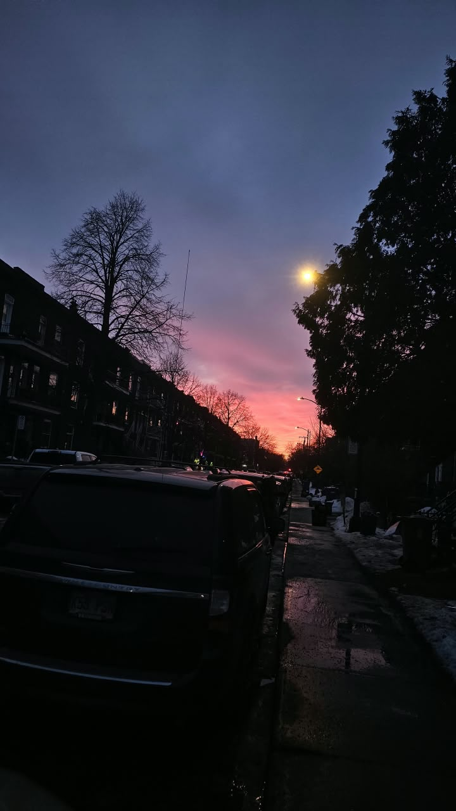
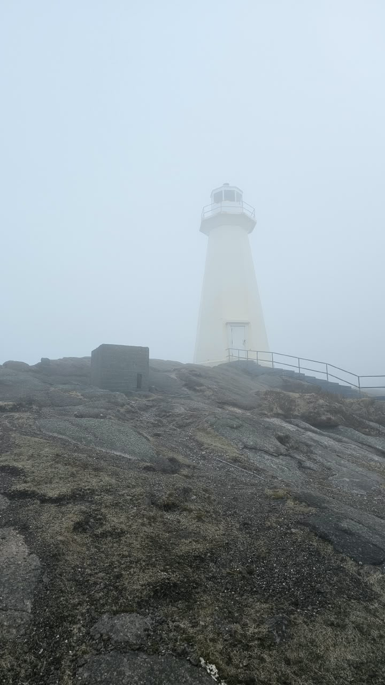

Aquellos momentos que no queremos que acaben
Siempre hay algo que sentir: sea la más roja de las rabias, el más profundo dolor, un amor irracional o aquella felicidad absurda que nos embarga la mente en los momentos de ebriedad donde nos olvidamos de la miseria implícita en la existencia; cuando dejamos de ver la vida como una palestra y más como una convergencia de instantes que nos recuerdan por qué seguimos luchando para no perderla. ¿Acaso es mero instinto lo que nos invita a seguir respirando? Somos conscientes del inexorable final, de que vivir también es sufrir, y aun así somos más los que escogemos continuar en el dominio de la lucha. Aunque sea momentáneamente, de vez en cuando damos con ratos que nos devuelven la vigorosidad al alma y nos hacen pensar que no es tan difícil ver la vida como un regalo, por más grotesco que sea. Estos son los míos.
A los atardeceres y a los días que dejaron rastro
- El alivio del verano; todos los pares de ojos que me salvaron aunque haya sido solo por una noche; los viajes en coche de punta a punta; todo lo que no fue y todo lo que no debió haber sido; el deseo de estar donde estuve y repetir los días que dejaron un rastro de felicidad.
- La esperanza que emerge en cada nuevo comienzo; la risa que no cualquiera nos saca; los sueños que sembramos sin esperar a cosecharlos; las miradas de los ángeles; las veces que hasta los eventos más cotidianos se sintieron como un milagro por estar juntos.
- Los momentos que nos hicieron creer que encontramos dónde pertenecemos; las recompensas que alcanzamos y las que simplemente brillaron desde lejos; las buenas amistades; cuando el impulso no es solo producto del instinto de existir; cuando recuerdo por qué lo hago.
Algún día sacaremos algo hermoso de todo este dolor.

A quienes han creído en mí
Vacío y compulsivo, la palabra "justicia" no era más que una palabra poética en un mundo donde no todos merecen una oportunidad. Alimentándome de recuerdos, me acuerdo de aquellos que han creído en mí cuando no me sentía sino una herramienta sin derecho a soñar; a los que me han dado la mano cuando estuve pisoteado en el suelo. A todos quienes me han dado razones para creer en un futuro mejor y no me llenaron de promesas vacuas para solo nutrir mis oídos. Por todos ustedes, la lucha continuará.
Lo que me impulsa
Cada día transcurría en un campo de batalla donde el dolor y el rencor se disputaban mi alma. Pero incluso cuando pensamos que no hemos sido configurados para otra cosa que el odio, damos con benevolencia que resiste a la matanza de la vida y nos regala optimismo. Siempre habrá un refugio contra la tormenta.
No esperaré que estén muertos para amarlos.
Como un faro en el estrecho de Dover, me guías a casa.

No escogeré la frialdad
No permitiré que el vacío me abrace
Veré la belleza y no me protegeré con egoísmo.
Aunque haya muerte en mí, también corre amor en mi sangre.
He bebido de la copa que me sirvió el altruismo.